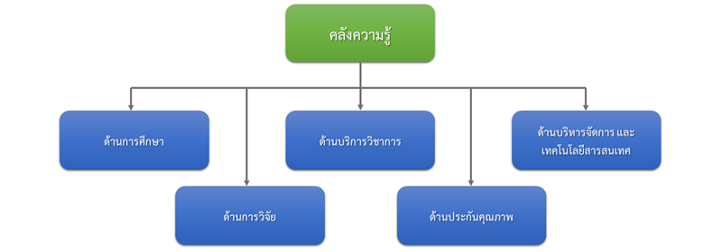
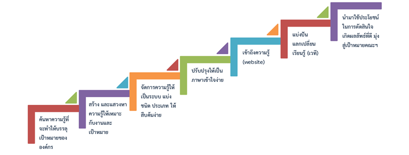
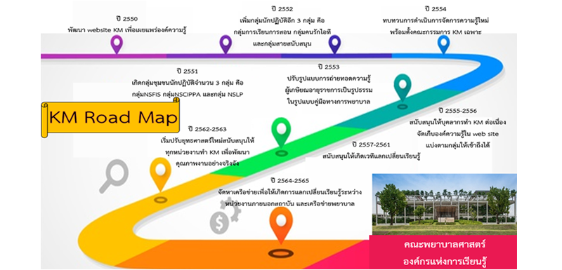

EN
EN
การจัดการความรู้
- เพื่อส่งเสริมกระบวนการการจัดการความรู้กับการดำเนินงานตามพันธกิจการศึกษา การวิจัย บริการวิชาการ บริหารจัดการ และการประกันคุณภาพของคณะพยาบาลศาสตร์
- เพื่อสร้างวัฒนธรรมองค์กรของการถ่ายทอดความรู้ผู้เกษียณอายุราชการ
- เพื่อให้บุคลากรสายสนับสนุนมีความรู้ ความเข้าใจในการวิเคราะห์สาเหตุของปัญหา ลดขั้นตอนการปฏิบัติงาน และการจัดทำแผนผัง Flowchart
- เพื่อแลกเปลี่ยนเรียนรู้ระหว่างกลุ่มงาน ค้นหาแนวแนวปฏิบัติที่ดี (Best Practice) และเผยแพร่ไปสู่บุคลากรของคณะพยาบาลศาสตร์และบุคคลภายนอก
- เพื่อถอดบทเรียน/ความรู้ที่ได้จากกระบวนการการจัดการความรู้กับการดำเนินงานตามพันธกิจต่างๆ ของคณะพยาบาลศาสตร์ และจากการถ่ายทอดความรู้ผู้เกษียณอายุราชการ
- เพื่อเกิดการนำความรู้จากการจัดการความรู้ไปใช้ในหน่วยงาน
งานพัฒนาคุณภาพและบริหารความเสี่ยง ได้วางนโยบายการดำเนินงานด้านการจัดการความรู้ของ คณะพยาบาลศาสตร์ ไว้ดังนี้
- สร้างระบบการจัดการความรู้ด้วยการส่งเสริมกระบวนการการจัดการความรู้ การสร้างองค์ความรู้ การจัดเก็บความรู้ รวมทั้งการนำความรู้ไปใช้ประโยชน์ ให้เป็นเครื่องมือพัฒนางานอย่างต่อเนื่องอันนำไปสู่การสร้างองค์ความรู้และนวัตกรรมใหม่
- สนับสนุนให้ทุกหน่วยงาน/ภาควิชาฯ มีการดำเนินงานด้านการจัดการความรู้ รวมทั้งการนำองค์ความรู้ที่ได้จากการแลกเปลี่ยนเรียนรู้ไปประยุกต์ใช้ในการดำเนินงานของหน่วยงาน/ภาควิชา เพื่อให้เกิดการปรับปรุงกระบวนการปฏิบัติงานให้มีประสิทธิภาพมากขึ้น
- เสริมสร้างวัฒนธรรมการแลกเปลี่ยนเรียนรู้ของการถ่ายทอดความรู้ผู้เกษียณอายุราชการ ทั้งในระดับภาควิชาฯ และระดับคณะฯ เพื่อให้เกิดการถ่ายโอนความรู้จากรุ่นพี่สู่รุ่นน้อง
กลไกการดำเนินงานด้านการจัดการความรู้คณะพยาบาลศาสตร์ มหาวิทยาลัยมหิดลที่สำคัญ มีดังนี้
- มีคณะกรรมการพัฒนาองค์กรแห่งการเรียนรู้และการจัดการความรู้
- มีหน่วยงานพัฒนาคุณภาพและบริหารความเสี่ยง เป็นผู้ดำเนินงานด้านการจัดการความรู้
จากกลไกการดำเนินงานด้านการจัดการความรู้ดังกล่าว คณะพยาบาลศาสตร์ มหาวิทยาลัยมหิดล นำไปสู่การปฏิบัติ โดยมีระบบ และกลไกการดำเนินงานด้านการจัดการความรู้ภายในคณะพยาบาลศาสตร์ มหาวิทยาลัยมหิดล ดังนี้
- แต่งตั้งคณะกรรมการพัฒนาองค์กรแห่งการเรียนรู้และการจัดการความรู้ เพื่อพัฒนาคณะพยาบาลศาสตร์ให้เป็นองค์กรแห่งการเรียนรู้ สร้างวัฒนธรรมขององค์กรแห่งการเรียนรู้ให้เกิดขึ้นในคณะฯ รวมถึงการจัดกิจกรรมแลกเปลี่ยนเรียนรู้ทั้งในระดับภาควิชา และหน่วยงาน
- จัดกิจกรรมการจัดการความรู้กับการดำเนินงานตามพันธกิจต่างๆ ทั้งในระดับภาควิชาฯ หน่วยงาน และระดับคณะฯ
- จัดกิจกรรมถ่ายทอดความรู้ผู้เกษียณอายุราชการ
- ถอดบทเรียน/ความรู้ที่ได้จากการจัดการความรู้กับการดำเนินงานตามพันธกิจต่างๆ ของ คณะพยาบาลศาสตร์ และจากถ่ายทอดความรู้ผู้เกษียณอายุราชการ
- เผยแพร่ความรู้ผ่านทางเว็บไซต์การจัดการความรู้และเว็บไซต์ของภาควิชาฯ
- สนับสนุนให้มีการนำความรู้จากการจัดการความรู้ไปใช้ในหน่วยงานอย่างต่อเนื่อง
- ดำเนินการจัดโครงการ/กิจกรรมให้เป็นไปตามแผนยุทธศาสตร์เพื่อให้บรรลุวิสัยทัศน์ของคณะพยาบาลศาสตร์
- ยุทธศาสตร์ที่ 1 พัฒนาทิศทางและกลไกสนับสนุนและส่งเสริมการจัดการความรู้
- ยุทธศาสตร์ที่ 2 การส่งเสริมและพัฒนาองค์ความรู้ด้านการจัดการความรู้
- ยุทธศาสตร์ที่ 3 ส่งเสริมการมีส่วนร่วมของบุคลากรทุกระดับในการจัดการความรู้
- ยุทธศาสตร์ที่ 4 สร้างบรรยากาศที่เอื้อต่อการจัดการความรู้
แผนกลยุทธ์ที่สอดคล้องกับการดำเนินงานด้านการจัดการความรู้
ยุทธศาสตร์ที่ 4
กลยุทธ์ที่ 4.5 พัฒนาระบบและกลไก เพื่อให้ได้องค์ความรู้ของสถาบันจากการจัดการความรู้
งานพัฒนาคุณภาพและบริหารความเสี่ยง คณะพยาบาลศาสตร์ มหาวิทยาลัยมหิดล มีแผนที่การดำเนินงานด้านการจัดการความรู้ (KM Map) โดยเป็นการจัดเก็บในรูปแบบของคลังความรู้ที่เกิดจากการ จัดกิจกรรมแลกเปลี่ยนเรียนรู้ สามารถเข้าไปได้ที่ Website KM http://www.elearning.ns.mahidol.ac.th/km ซึ่งได้จัดเก็บแบ่งเป็น 5 ด้าน ดังนี้

กระบวนการขั้นตอนสู่ความสำเร็จด้านการจัดการความรู้ของ คณะพยาบาลศาสตร์ มหาวิทยาลัยมหิดล มี 7 ขั้นตอน

KM Road Map
